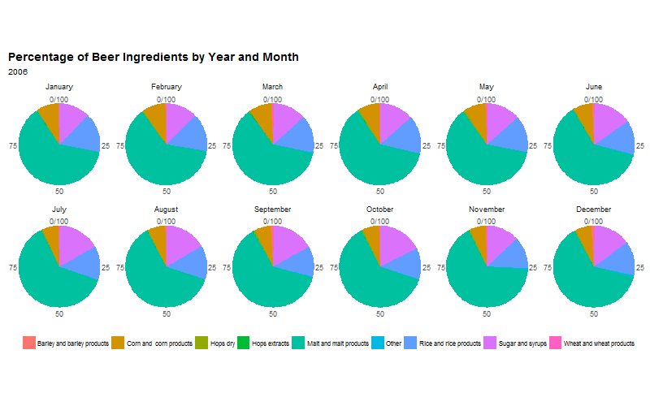
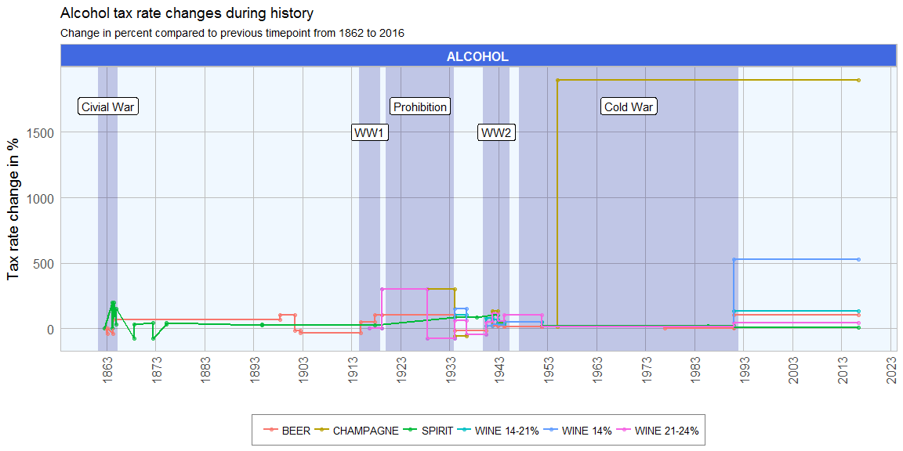
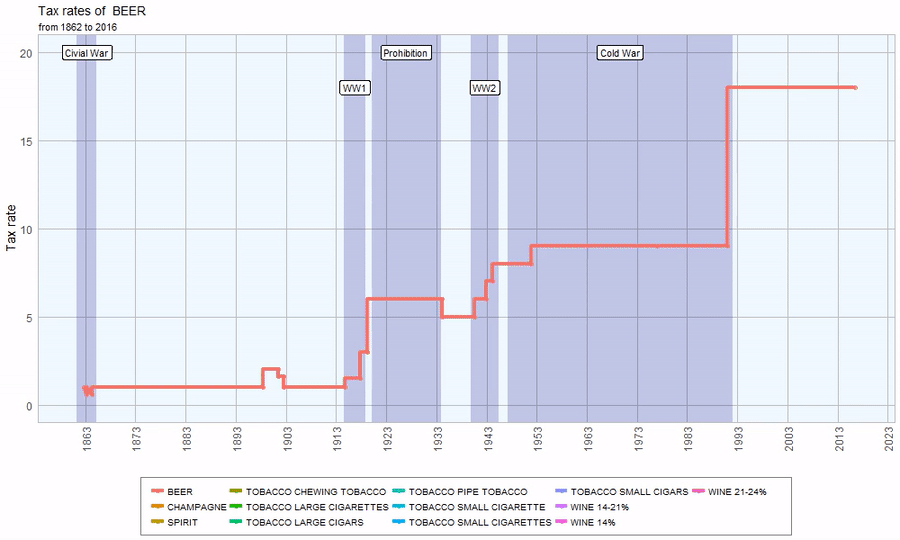
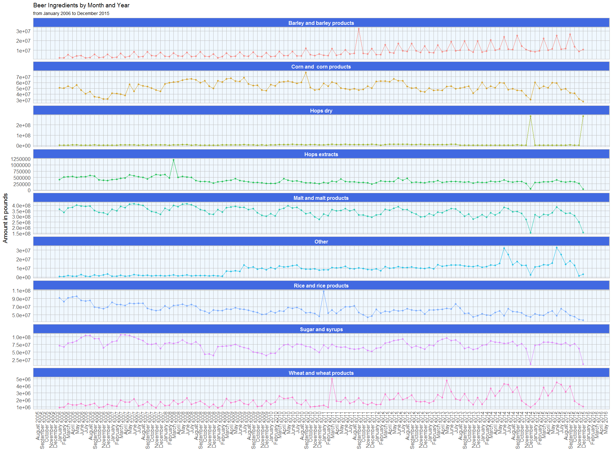

With the upcoming holidays, I thought it fitting to finally explore the ttbbeer package. It contains data on beer ingredients used in US breweries from 2006 to 2015 and on the (sin) tax rates for beer, champagne, distilled spirits, wine and various tobacco items since 1862.
I will be exploring these datasets and create animated plots with the animation package and the gganimate extension for ggplot2.
Merry R-Mas and Cheers! :-)
(For full code see below…)
Beer materials since 2006
This dataset includes the monthly aggregates of ingredients as reported by the Beer Monthly Statistical Releases, the Brewer’s Report of Operations and the Quarterly Brewer’s Report of Operations from the US Alcohol and Tobacco Tax and Trade Bureau (TTB).
The following nine ingredients are listed:
- Malt and malt products
- Corn and corn products
- Rice and rice products
- Barley and barley products
- Wheat and wheat products
- Sugar and syrups
- Dry hops
- Hops extracts
- Other ingredients, like flavors, etc.
All ingredient amounts are given in pounds.
I’m not only interested in the total amounts of ingredients that were used but also in the change compared to the previous month. This, I’m calculating as the percent of change compared to the previous entry, starting with 0 in January 2006.
The first thing I wanted to know was how many ingredients were used in total each month. This probably gives a rough estimate of how much beer was produced that month.

The seasonal variation in ingredient use shows that more beer is produced in late spring/ early summer than in winter. Given that it takes about one to four months from production to the finished product, it fits my intuition that people drink more beer when it’s warm outside rather than in the cold of winter.
Now lets look at the ingredients separately. This plot shows the monthly sum of pounds for each ingredient:

We can see the following trends:
- The seasonal trend in overall beer production is reflected in the individual ingredients
- Barley and wheat use has been steadily increasing since 2006
- Corn and corn products has spiked between 2008 and 2011 and slightly dropped since
- Dry hops has two very prominent spikes in 2014 and 2015, we will look at these in more detail in the following figures
- The use of hops extracts, malt and rice has slighty decreased since 2006
- Sugar and syrup use has dropped of between 2006 and 2010 and has since been relatively stable, with the exception of two months in 2014 and 2015
- Other additives, like flavors, have increased sharply since 2009; in the last two years their use shows extremely high variability between summer (many added) and winter (fewer added); this might be due to the popularity of craft beers and light summer variants.
We can see that barley use spikes every third month, except for a few outlier months. Dy hops is interesting as there are two very prominent spikes in December 2014 and in December 2015. In the same months we see a drop for corn, hops extracts, malt, other ingredients, sugar and syrups and wheat.
The following plot shows the percent of change compared to the previous month for the monthly sums of ingredients:

Here we can again see the seasonality of ingredient use, while we can also see that the overall trend shows no significant change from zero.
The two outlier months, December 2014 and 2015 are quite conspicuous in these plots as well. This might be due to specific trends or there were shortages of supply for fresh hops and malt during these months (even though we don’t see a drop in overall ingredient amounts).
The first animated plot shows the percentages of ingredients that were used per month. Each frame shows one year.

The percentage plots show that there are no major differences in the proportions of ingredients, again with the exception of December 2014 and 2015.
Sin taxes since 1862
Tax rates for beer, champagne, distilled spirits, wine (separated into three alcohol percentage classes: up to 14%, 14 - 21% and 21 24%) and various tobacco items are included in separate datasets. The tax rates are given in US Dollar per
- Barrel of beer (31 gallons)
- Wine gallon
- Proof barrel of distilled spirits
- 1000 units of small and large cigarettes and cigars
- 1 lb. of pipe, chewing and roll-your-own tobacco and snuff
Before I can visualize the data, I need to to do some tidying and preprocessing:
- I’m adding a column with the tax group
- to keep it consistent, I’m converting all tobacco item names to upper case letters
- to dates in the tobacco set were probably wrong, because they messed up the plots, so I corrected them
For each tax group I also want to know the percent of change in tax rate compared to the previous time point.
The first plot shows a time line of tax rate changes since 1862. Major historical events are marked.

The strongest increase in tax rates can be seen for champagne in the 1950s and for wine (14%) following the end of the Cold War. At the end of the civil war, there is a sharp drop in the tax rates for distilled spirits. Spirit tax increased little between 1874 and the beginning of prohibition. During prohibition we can also see an increase of tax rates for champagne and wine (21-24%). While tax rates remained stable during the Cold War, they increased again in 1991 for all drinks, except for spirits.
The same plot as above but with absolute tax rates is visualized in the animated plot below:

The plot below catches the same information in a static plot:

All tax rates have increased strongly since 1862. Beer and wine show a strong jump in 1991 and at the beginning of prohibition. Between the end of prohibition and World War II, beer and wine taxes had dropped again, albeit slightly. Since the 1940s, all alcohol taxes have risen steadily. For tobacoo there is only sporadic information.
R code
library(ttbbeer)
data("beermaterials")
library(dplyr)
# order by year from least to most recent
beermaterials_change <- arrange(beermaterials, Year)
# calculate percent change for each ingredient column
for (i in 3:ncol(beermaterials_change)){
value <- beermaterials_change[[colnames(beermaterials_change)[i]]]
beermaterials_change[, i] <- c(0,
100 * round((value[-1] - value[1:(length(value)-1)]) /
value[1:(length(value)-1)], 2))
}
head(beermaterials_change)
## # A tibble: 6 × 11
## Month Year Malt_and_malt_products `Corn_and _corn_products`
## <chr> <int> <dbl> <dbl>
## 1 January 2006 0 0
## 2 February 2006 -8 -1
## 3 March 2006 11 7
## 4 April 2006 2 -6
## 5 May 2006 5 10
## 6 June 2006 -2 -15
## # ... with 7 more variables: Rice_and_rice_products <dbl>,
## # Barley_and_barley_products <dbl>, Wheat_and_wheat_products <dbl>,
## # Sugar_and_syrups <dbl>, Hops_dry <dbl>, Hops_extracts <dbl>,
## # Other <dbl>
#calcluate sum of ingredients per month
beermaterials$sum <- rowSums(beermaterials[, -c(1:2)])
For plotting I’m converting the tables from wide to long format:
library(tidyr)
beermaterials_gather <- beermaterials %>%
gather(Ingredient, Amount, Malt_and_malt_products:Other)
beermaterials_gather$Date <- paste("01", beermaterials_gather$Month, beermaterials_gather$Year, sep = "-") %>%
as.Date(format = "%d-%B-%Y")
beermaterials_gather$Ingredient <- gsub("_", " ", beermaterials_gather$Ingredient)
beermaterials_change_gather <- beermaterials_change %>%
gather(Ingredient, Amount, Malt_and_malt_products:Other)
beermaterials_change_gather$Date <- paste("01", beermaterials_change_gather$Month, beermaterials_change_gather$Year, sep = "-") %>%
as.Date(format = "%d-%B-%Y")
beermaterials_change_gather$Ingredient <- gsub("_", " ", beermaterials_change_gather$Ingredient)
And I’m preparing my custom ggplot2 theme:
library(ggplot2)
my_theme <- function(base_size = 12, base_family = "sans"){
theme_minimal(base_size = base_size, base_family = base_family) +
theme(
axis.text = element_text(size = 12),
axis.text.x = element_text(angle = 90, vjust = 0.5, hjust = 1),
axis.title = element_text(size = 14),
panel.grid.major = element_line(color = "grey"),
panel.grid.minor = element_blank(),
panel.background = element_rect(fill = "aliceblue"),
strip.background = element_rect(fill = "royalblue", color = "grey", size = 1),
strip.text = element_text(face = "bold", size = 12, color = "white"),
legend.position = "bottom",
legend.justification = "top",
legend.box = "horizontal",
legend.box.background = element_rect(colour = "grey50"),
legend.background = element_blank(),
panel.border = element_rect(color = "grey", fill = NA, size = 0.5)
)
}
theme_set(my_theme())
ggplot(beermaterials_gather, aes(x = Date, y = sum)) +
geom_point(size = 1.5, alpha = 0.6, color = "navy") +
geom_smooth(alpha = 0.3, color = "black", size = 0.5, linetype = "dashed") +
geom_line(color = "navy") +
guides(color = FALSE) +
labs(
x = "",
y = "Amount in pounds",
title = "Sum of Beer Ingredients by Month and Year",
subtitle = "Sum of monthly aggregates of all ingredients from 2006 to 2015"
) +
scale_x_date(date_breaks = "6 month", date_labels = "%B %Y")
ggplot(beermaterials_gather, aes(x = Date, y = Amount, color = Ingredient)) +
geom_point(size = 1.5, alpha = 0.6) +
geom_smooth(alpha = 0.3, color = "black", size = 0.5, linetype = "dashed") +
geom_line() +
facet_wrap(~Ingredient, ncol = 3, scales = "free_y") +
guides(color = FALSE) +
labs(
x = "",
y = "Amount in pounds",
title = "Beer Ingredients by Month and Year",
subtitle = "Monthly aggregates of ingredients from 2006 to 2015"
) +
scale_x_date(date_breaks = "1 year", date_labels = "%Y")
ggplot(beermaterials_gather, aes(x = Date, y = Amount, color = Ingredient)) +
geom_point(size = 1.5, alpha = 0.6) +
guides(color = FALSE) +
geom_line() +
labs(
x = "",
y = "Amount in pounds",
title = "Beer Ingredients by Month and Year",
subtitle = "from January 2006 to December 2015"
) +
scale_x_date(date_breaks = "1 month", date_labels = "%B %Y") +
facet_wrap(~Ingredient, ncol = 1, scales = "free_y")
To explore the seasonal changes in more detail, I’m widening the resolution of the x-axis.

ggplot(beermaterials_change_gather, aes(x = Date, y = Amount, color = Ingredient)) +
geom_smooth(alpha = 0.3, color = "black", size = 0.5, linetype = "dashed") +
geom_point(size = 1.5, alpha = 0.6) +
geom_line() +
facet_wrap(~Ingredient, ncol = 3, scales = "free_y") +
guides(color = FALSE) +
labs(
x = "",
y = "Percent change",
title = "Beer Ingredients by Month and Year",
subtitle = "Percent change of monthly aggregates of ingredients compared to previous month from 2006 to 2015"
) +
scale_x_date(date_breaks = "1 year", date_labels = "%Y")
beermaterials_percent <- cbind(beermaterials[, 1:2], prop.table(as.matrix(beermaterials[, -c(1:2)]), margin = 1) * 100)
beermaterials_percent_gather <- beermaterials_percent %>%
gather(Ingredient, Amount, Malt_and_malt_products:Other)
beermaterials_percent_gather$Ingredient <- gsub("_", " ", beermaterials_percent_gather$Ingredient)
f = unique(beermaterials_percent_gather$Month)
beermaterials_percent_gather <- within(beermaterials_percent_gather, Month <- factor(Month, levels = f))
library(animation)
ani.options(ani.width=800, ani.height=500)
saveGIF({
for (year in rev(unique(beermaterials_percent_gather$Year))){
pie <- ggplot(subset(beermaterials_percent_gather, Year == paste(year)), aes(x = "", y = Amount, fill = Ingredient, frame = Year)) +
geom_bar(width = 1, stat = "identity") + theme_minimal() +
coord_polar("y", start = 0) +
labs(
title = "Percentage of Beer Ingredients by Year and Month",
subtitle = paste(year)) +
theme(
axis.title.x = element_blank(),
axis.title.y = element_blank(),
panel.border = element_blank(),
panel.grid = element_blank(),
axis.ticks = element_blank(),
plot.title = element_text(size = 14, face = "bold"),
legend.title = element_blank(),
legend.position = "bottom",
legend.text = element_text(size = 8)
) +
facet_wrap( ~ Month, ncol = 6) +
guides(fill = guide_legend(ncol = 9, byrow = FALSE))
print(pie)
}
}, movie.name = "beer_ingredients.gif")
ggplot(beermaterials_percent_gather, aes(x = Month, y = Amount, color = Ingredient, fill = Ingredient)) +
geom_bar(width = 0.8, stat = "identity", alpha = 0.7) +
my_theme() +
guides(color = FALSE) +
facet_wrap( ~ Year, ncol = 5) +
labs(
x = "",
y = "Percent",
title = "Percentage of Beer Ingredients by Year and Month",
subtitle = "from 2006 to 2015",
fill = ""
)
To see the information from the animated figure at one glance, the next plots shows the percentages of ingredients per month and year as a barplot:

beertax$tax <- "BEER"
champagnetax$tax <- "CHAMPAGNE"
spirittax$tax <- "SPIRIT"
tobaccotax$ITEM <- toupper(tobaccotax$ITEM)
tobaccotax$tax <- paste("TOBACCO", tobaccotax$ITEM, sep = " ")
tobaccotax <- tobaccotax[, -1]
tobaccotax[18, 2] <- "1977-01-31"
tobaccotax[18, 1] <- "1977-01-01"
winetax14$tax <- "WINE 14%"
winetax1421$tax <- "WINE 14-21%"
winetax2124$tax <- "WINE 21-24%"
taxes_list <- c("beertax", "champagnetax", "spirittax", "tobaccotax", "winetax14", "winetax1421", "winetax2124")
for (tax in taxes_list){
tax_df <- get(tax)
tax_df <- tax_df[match(sort(tax_df$FROM), tax_df$FROM), ]
if (tax != "tobaccotax"){
tax_df$change <- c(0,
100 * round((tax_df$RATE[-1] - tax_df$RATE[1:(length(tax_df$RATE)-1)]) /
tax_df$RATE[1:(length(tax_df$RATE)-1)], 2))
} else {
tax_df$change <- "NA"
}
if (tax == "beertax"){
tax_df_2 <- tax_df
} else {
tax_df_2 <- rbind(tax_df_2, tax_df)
}
}
tax_2 <- tax_df_2
tax_2$ID <- paste(tax_2$tax, rownames(tax_2), sep = "_")
head(tax_2)
## FROM TO RATE tax change ID
## 4 1862-09-01 1863-03-03 1.0 BEER 0 BEER_4
## 5 1863-03-03 1864-03-31 0.6 BEER -40 BEER_5
## 6 1864-04-01 1898-06-13 1.0 BEER 67 BEER_6
## 7 1898-06-14 1901-06-30 2.0 BEER 100 BEER_7
## 8 1901-07-01 1902-06-30 1.6 BEER -20 BEER_8
## 9 1902-07-01 1914-10-22 1.0 BEER -38 BEER_9
Now I can gather the dataframe for plotting.
library(tidyr)
tax_gather <- tax_2 %>%
gather(dat_column, Date, FROM:TO)
tax_gather$group <- gsub(" .*", "", tax_gather$tax)
d <- data.frame(xmin = as.Date(c("1861-04-12", "1914-07-28", "1920-01-16", "1939-11-01", "1947-03-12")),
ymin = -Inf,
xmax = as.Date(c("1865-04-09", "1918-11-11", "1933-12-05", "1945-05-08", "1991-12-26")),
ymax = Inf,
description = c("Civial War", "WW1", "Prohibition", "WW2", "Cold War"),
pos_y = as.numeric(c(rep(c("1700", "1500"), 2), "1700")))
d$pos_x <- as.Date(NA)
for (i in 1:nrow(d)){
d[i, "pos_x"] <- as.Date(as.character(median(c(d$xmin[i], d$xmax[i]))))
}
tax_gather$group2 <- ifelse(tax_gather$group == "TOBACCO", "TOBACCO", "ALCOHOL")
ggplot() +
geom_rect(data = d, aes(xmin = xmin, xmax = xmax, ymin = ymin, ymax = ymax), alpha=0.2, fill = "navy") +
geom_label(data = d, aes(pos_x, pos_y, label = description), check_overlap = TRUE) +
geom_point(data = subset(tax_gather, group2 == "ALCOHOL"), aes(x = Date, y = as.numeric(change), color = tax), size = 1.5, alpha = 0.6) +
geom_line(data = subset(tax_gather, group2 == "ALCOHOL"), aes(x = Date, y = as.numeric(change), color = tax), size = 1) +
facet_wrap(~group2, ncol = 1, scales = "free_y") +
labs(
x = "",
y = "Tax rate change in %",
color = "",
title = "Alcohol tax rate changes during history",
subtitle = "Change in percent compared to previous timepoint from 1862 to 2016"
) +
guides(color = guide_legend(ncol = 6, byrow = FALSE)) +
scale_x_date(date_breaks = "10 year", date_labels = "%Y")
d$pos_y <- as.numeric(c(rep(c("20", "18"), 2), "20"))
library(gganimate)
p <- ggplot() +
geom_rect(data = d, aes(xmin = xmin, xmax = xmax, ymin = ymin, ymax = ymax), alpha=0.2, fill = "navy") +
geom_label(data = d, aes(pos_x, pos_y, label = description), check_overlap = TRUE) +
geom_point(data = tax_gather, aes(x = Date, y = RATE, color = tax, frame = tax), size = 2, alpha = 0.6) +
geom_line(data = tax_gather, aes(x = Date, y = RATE, color = tax, frame = tax), size = 1.5) +
labs(
x = "",
y = "Tax rate",
color = "",
title = "Tax rates of ",
subtitle = "from 1862 to 2016"
) +
guides(color = guide_legend(ncol = 6, byrow = FALSE)) +
scale_x_date(date_breaks = "10 year", date_labels = "%Y")
ani.options(ani.width=1000, ani.height=600)
gganimate(p, filename = "taxes_by_tax.mp4", cumulative = TRUE)
gganimate(p, filename = "taxes_by_tax.gif", cumulative = TRUE)
ggplot() +
geom_rect(data = d, aes(xmin = xmin, xmax = xmax, ymin = ymin, ymax = ymax), alpha=0.2, fill = "navy") +
geom_smooth(data = tax_gather, aes(x = Date, y = RATE, color = tax), alpha = 0.3, color = "black", size = 0.5, linetype = "dashed") +
geom_point(data = tax_gather, aes(x = Date, y = RATE, color = tax), size = 1.5, alpha = 0.6) +
geom_line(data = tax_gather, aes(x = Date, y = RATE, color = tax), size = 1) +
facet_wrap(~group, ncol = 2, scales = "free_y") +
labs(
x = "",
y = "Tax rate",
color = "",
title = "Alcohol and tobacco tax rates",
subtitle = "from 1862 to 2016"
) +
guides(color = guide_legend(ncol = 6, byrow = FALSE)) +
scale_x_date(date_breaks = "20 year", date_labels = "%Y")
## R version 3.3.2 (2016-10-31)
## Platform: x86_64-w64-mingw32/x64 (64-bit)
## Running under: Windows 7 x64 (build 7601) Service Pack 1
##
## locale:
## [1] LC_COLLATE=English_United States.1252
## [2] LC_CTYPE=English_United States.1252
## [3] LC_MONETARY=English_United States.1252
## [4] LC_NUMERIC=C
## [5] LC_TIME=English_United States.1252
##
## attached base packages:
## [1] stats graphics grDevices utils datasets methods base
##
## other attached packages:
## [1] ggplot2_2.2.0 tidyr_0.6.0 dplyr_0.5.0 ttbbeer_1.1.0
##
## loaded via a namespace (and not attached):
## [1] Rcpp_0.12.8 knitr_1.15.1 magrittr_1.5 munsell_0.4.3
## [5] lattice_0.20-34 colorspace_1.3-2 R6_2.2.0 stringr_1.1.0
## [9] plyr_1.8.4 tools_3.3.2 grid_3.3.2 nlme_3.1-128
## [13] gtable_0.2.0 mgcv_1.8-16 DBI_0.5-1 htmltools_0.3.5
## [17] yaml_2.1.14 lazyeval_0.2.0 assertthat_0.1 rprojroot_1.1
## [21] digest_0.6.10 tibble_1.2 Matrix_1.2-7.1 evaluate_0.10
## [25] rmarkdown_1.2 labeling_0.3 stringi_1.1.2 scales_0.4.1
## [29] backports_1.0.4